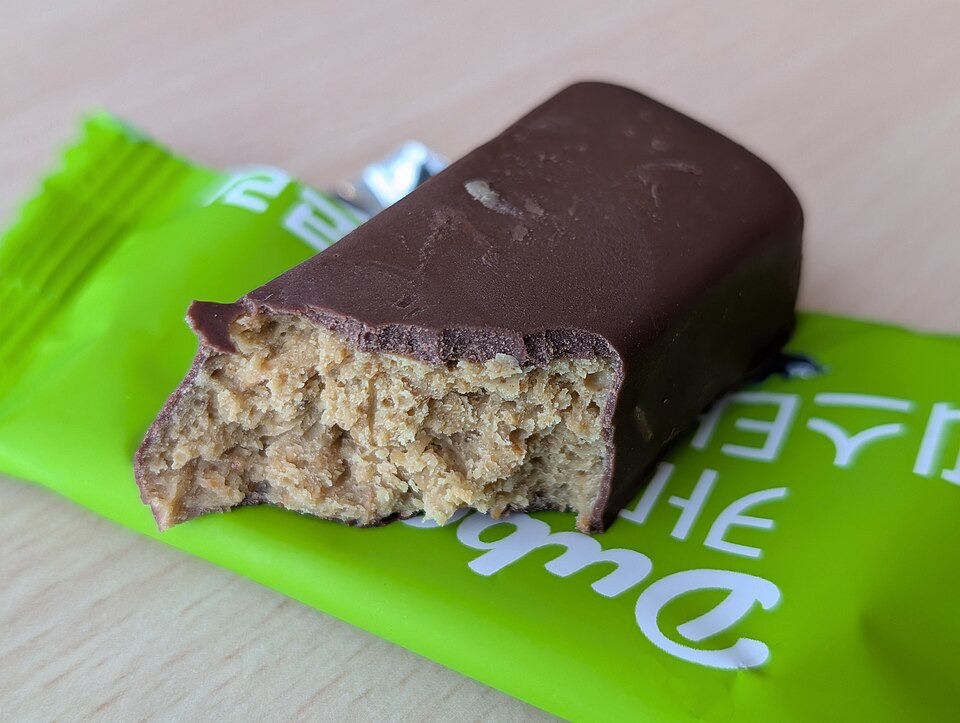
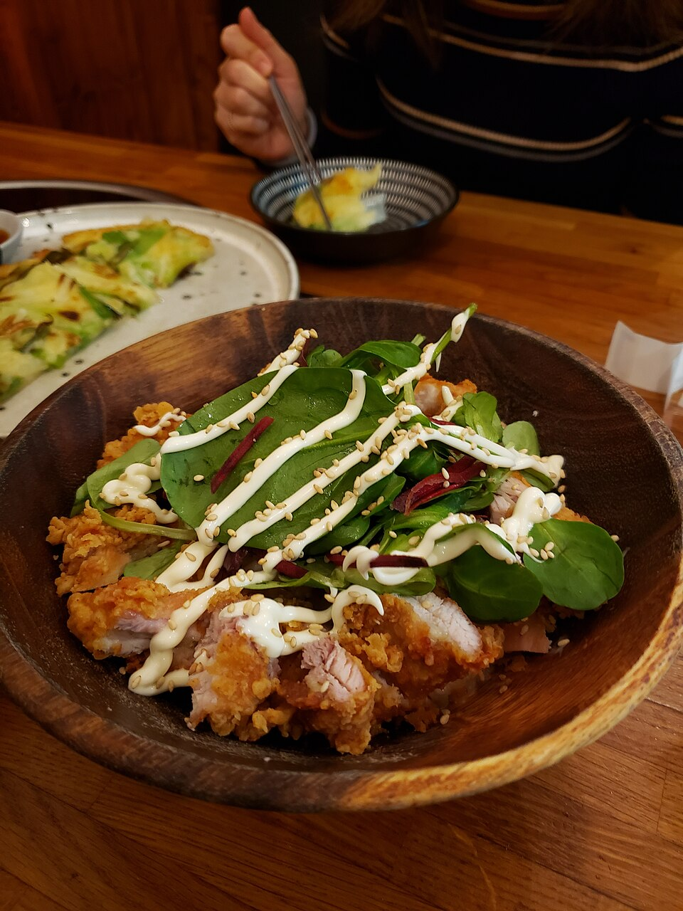
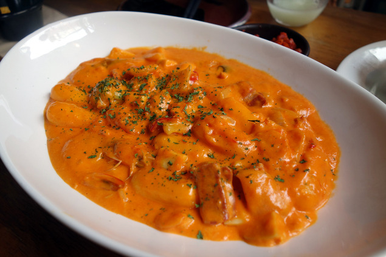
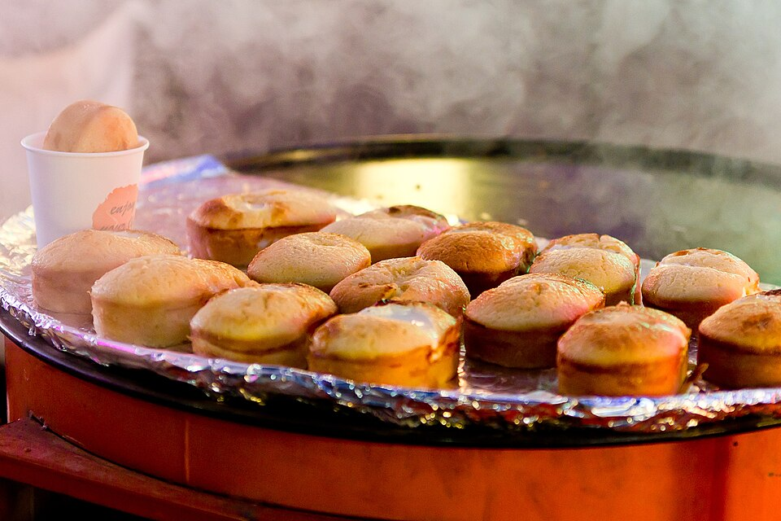
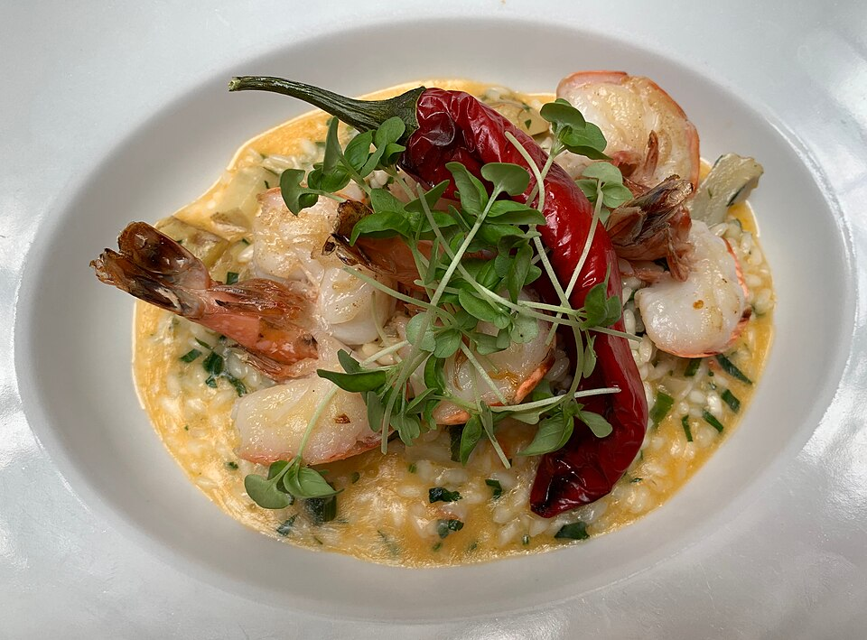
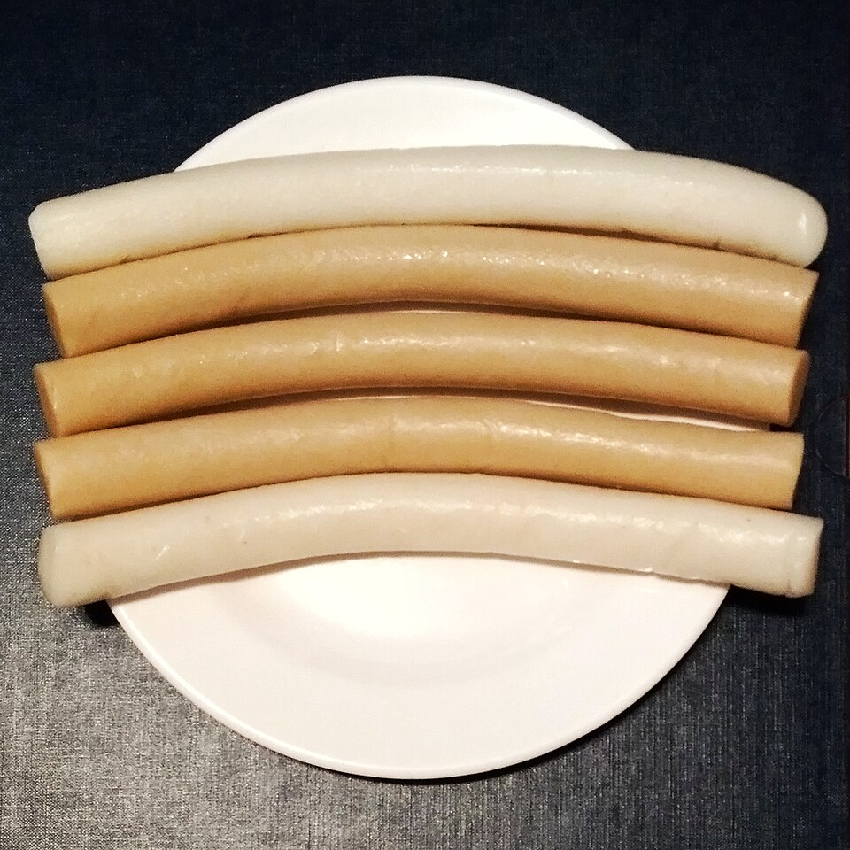
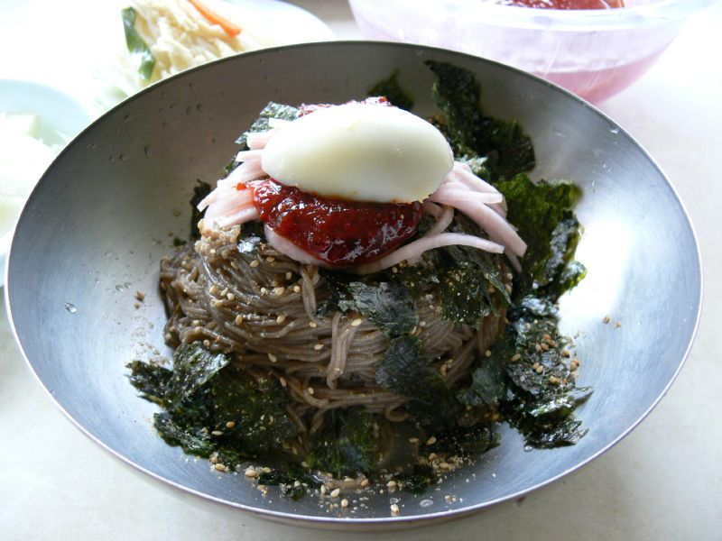
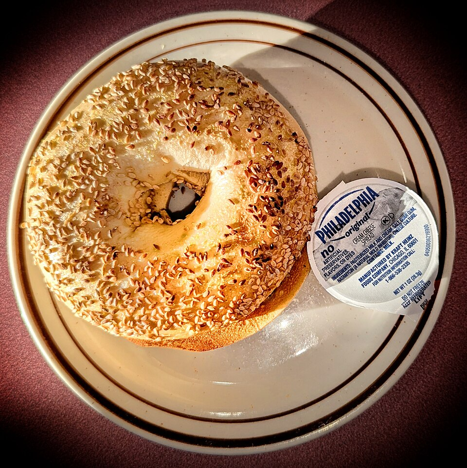
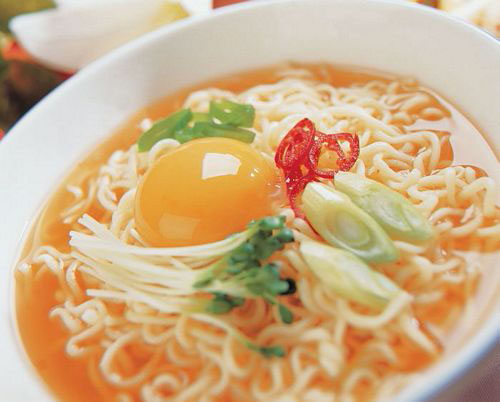

오늘 가장 많이 찾은 음식, 1위
피스타치오 크림과 바삭한 카다이프를 채운 초콜릿. 일주일 새 검색량이 세 배로 늘었어요.
AI 요약, 운영자 검수 완료. 데모 사진

남은 치킨을 잘게 찢어 마요네즈, 데리야끼 소스와 함께 밥 위에. 배달 치킨 다음 날 메뉴로 많이 찾아요.

고추장 소스에 우유와 크림치즈를 더해 덜 맵고 고소하게. 분식집 인기 메뉴를 집에서.

핫케이크 가루 반죽에 계란을 하나씩. 에어프라이어 15분이면 길거리 그 맛이에요.

즉석밥에 우유와 치즈를 넣고 졸이면 끝. 냉동 새우로 충분해요.
깻잎으로 참치마요를 감싸 말면 물기 없이 깔끔해요.

가래떡을 버터에 노릇하게 굽고 꿀을 한 줄. 겨울 간식으로 다시 뜨고 있어요.

메밀면에 들기름, 간장, 김가루. 양념 세 가지로 끝나는 국수예요.

구운 대파를 다져 크림치즈에 섞으면 베이글 가게 맛.

계란은 불 끄기 30초 전에, 파는 아끼지 말고.